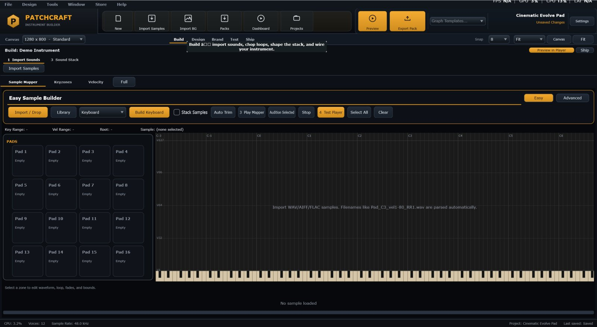
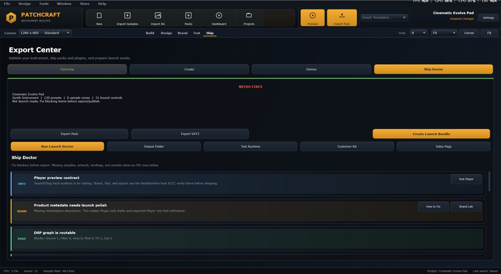
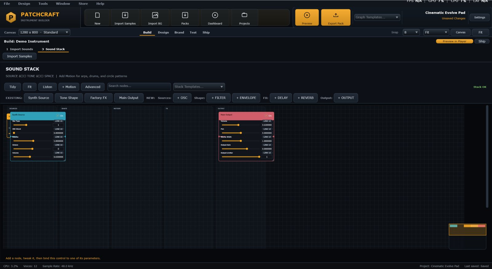
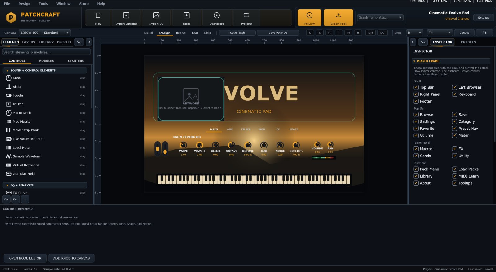
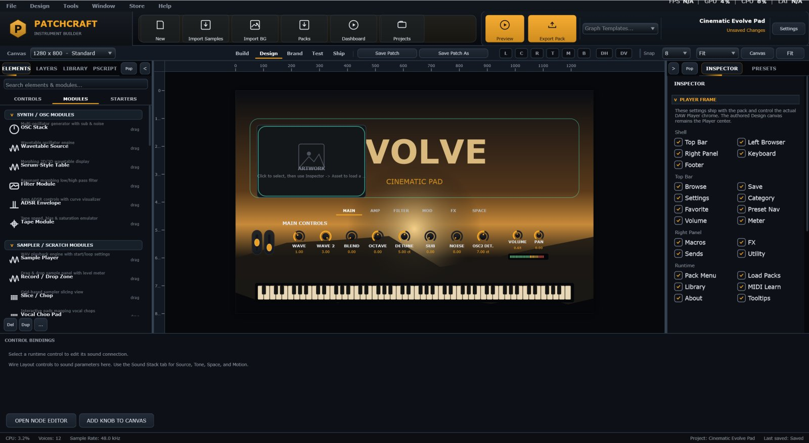
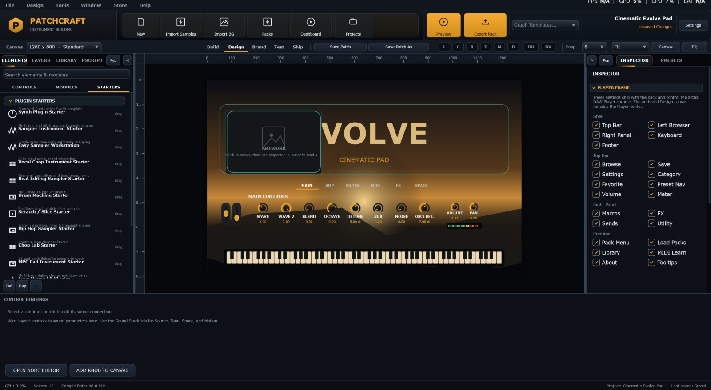
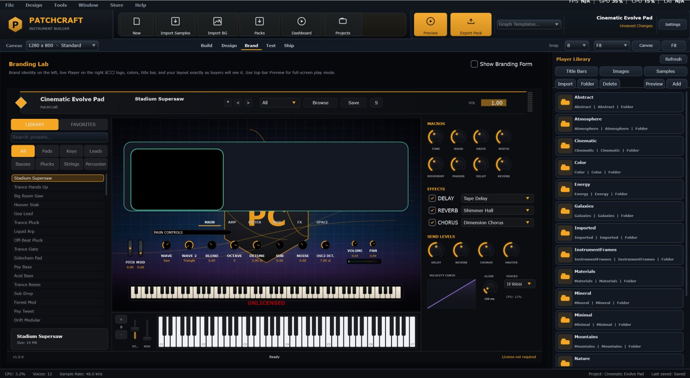
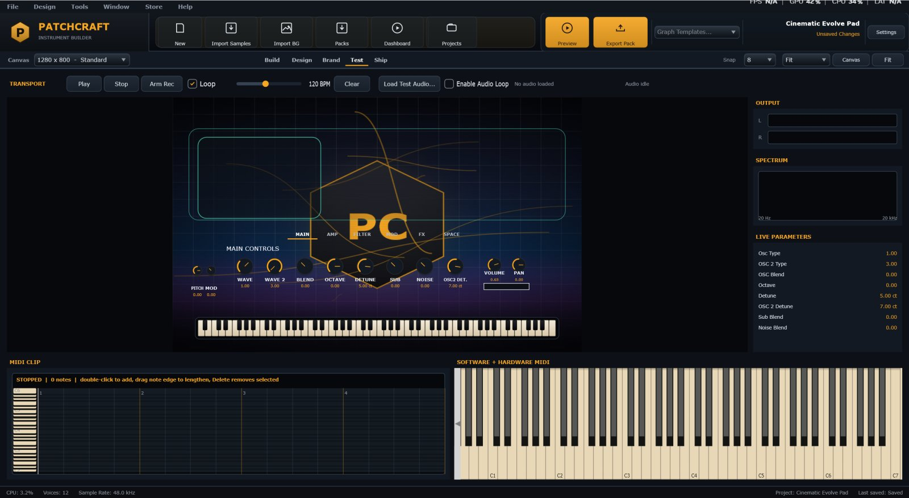
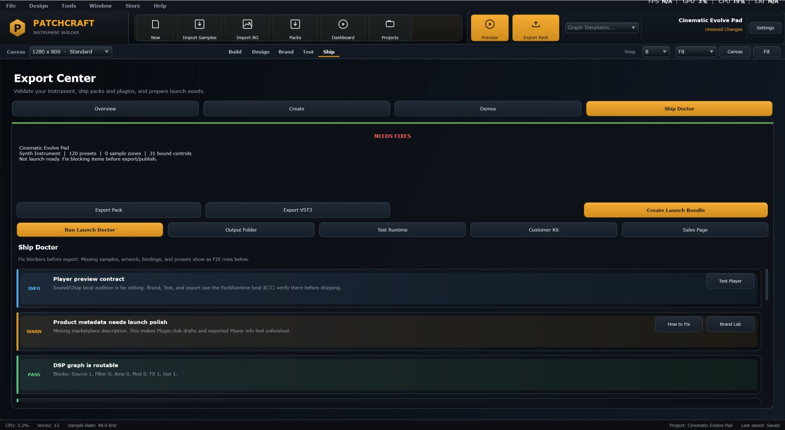

Build
Design
Brand
Test
Ship
PatchCraft User Manual
Written for the current PatchCraft Studio toolbar:
Build → Design → Brand → Test → Ship .
This guide explains every page and panel you see today, then walks through building each major instrument type end to end.
UI contract: The five primary tabs are always Build , Design , Brand , Test , and Ship .
Older docs that talk about Workflow / Samples / DSP / Brand Lab / Launch as top tabs are obsolete.
Mental Model
Studio authors a pack. Player loads that pack. The Design canvas is the customer-facing control surface for the Sound Stack — not the sound itself.
Project What you edit in Studio: engine, canvas, layout, samples, graph, presets, branding.
Sound Stack The live signal graph (sources, shape, motion, FX, output) opened from Build step 3.
Layout Knobs, pads, modules, and starters on the Design canvas, bound to real parameters.
Preset / Patch A named playable state buyers can recall in the Player.
.patchcraft pack The exported product folder Player opens.
Player VST3 / standalone runtime musicians use in a DAW.
Studio vs Player
PatchCraft Studio — authoring app. Tabs: Build, Design, Brand, Test, Ship.PatchCraft Player — runtime that loads exported packs.Player FX — FX-oriented Player for insert processing.
You do not ship Studio. You ship a pack (and optionally a wrapped VST3) that Player loads.
The Five Tabs
1 Build2 Design3 Brand4 Test5 Ship

Primary toolbar tabs sit above the workspace: Build, Design, Brand, Test, Ship.
Tab What you do Done when
Build Import sounds, optional chop, shape Sound Stack, optional Perform. The instrument makes sound with the right character. Design Place Controls / Modules / Starters; bind them; organize layers. Every visible control drives a real parameter or useful UI state. Brand Name, colors, artwork, Player chrome, library options. Preview looks like a finished product. Test Play the export runtime with keyboard / MIDI. Sound, tabs, presets, and mappings behave like the buyer experience. Ship Health checks and export. Checks are clear; pack opens in Player.
Studio Chrome (Always Visible)
Besides the five tabs, use these constantly:
New — start a starter project (Sample / Synth / Drum Machine / Effect).Open — load a Studio project or a factory .patchcraft pack.Save — save the project.Import Samples — add WAV / AIFF / FLAC.Import BG — add Design canvas artwork.Preview — hear Studio audio while editing.Export Pack — jump toward shipping a pack.Left rail on Design — Elements, Layers, Library, pScript.Right rail — Inspector for the selection.
Quick Start
New Click New and pick Synth, Sample, Drum Machine, or Effect.
Build → 1 Import Sounds If it is a sample product, import audio and map it. Synths can skip ahead.
Build → 3 Sound Stack Shape the graph until it sounds right. Use Listen while playing notes.
Design Add Controls / Modules / Starters. Bind every control.
Brand Set product name, accent, banner, and Player chrome.
Test Play MIDI. Twist controls. Fix anything dead.
Ship Clear health checks → Export Pack → open in Player.
Build
Build is selected in the primary toolbar. Inside Build, use the numbered sub-steps.
Build is the authoring hub. Its own sub-step radios are:
1 Import Sounds2 Chop Loop3 Sound Stack4 Perform
2 Chop Loop appears for loop/chop product recipes.4 Perform appears after you unlock Advanced Build.
On the Build header you may also see Import Samples , Advanced Map , Preview Player , and Ship shortcuts.
Build · 1 Import Sounds

Sub-step 1 Import Sounds is active under the Build tab.
Import Use Import Samples or drag WAV / AIFF / FLAC into the mapper.
Map Easy mode guides mapping. Unlock Advanced Build for keyzones, velocity layers, and round-robin.
Trim Remove silence, set fades, loops, and one-shot vs sustain behavior.
Prove Play the range. Silent notes usually mean missing zones or wrong root keys.
Filename tip: piano_C3_v127_rr1.wav automaps better than final2.wav.
Build · 2 Chop Loop
Visible for loop/chop products. Use it to slice loops into pads or keys: grids, transients, and tempo-aware chops.
Load a loop Import the source audio first (step 1).
Slice Set grid / transient markers and audition slices.
Map Send slices to pads or key ranges.
Continue Move to 3 Sound Stack for tone and FX, then Design the pad UI.
Build · 3 Sound Stack

Sound Stack is Build sub-step 3 — the node graph for the instrument.
Sound Stack is the signal path. Columns: Sources · Shape · Motion · FX · Output .
Connect nodes (current editor)
Drag from OUT Grab the right-side port on a node.
Watch glow Compatible IN ports pulse; incompatible nodes dim.
Drop or click-to-connect Drop on a glowing IN, or click OUT then click a highlighted node. Esc cancels.
Tidy / Fit — layout and zoom helpersListen — hear the graph through the Player engineStack Templates — Init Synth, Warm Pad, Drum Bus, Arp Step Sequencer, etc.+ Motion — add Arpeggiator, Drum Sequencer, or Circle SequencerAdvanced — full graph features when needed
Audio generally flows Source → Shape → FX → Output. Modulation / event sources feed Shape, FX, or Sources — not Output.
Advanced Build
Easy Build keeps the path short. Unlock Advanced when you need:
Keyzones / velocity layers (Advanced Map )
Perform step (step 4)
Deeper graph / multi-layer rack tools
You can unlock Advanced from Build actions (for example Advanced Map). Once unlocked, Perform and related tools stay available for that session/project path.
Design

Design is a primary toolbar tab. The canvas is the Player body; Elements / Layers / Library sit on the left; Inspector on the right.
Use Design to build what buyers touch:
Canvas size / snap / zoom / fit
Layers for ordering and groups
Library for backgrounds, templates, reusable assets
Inspector for geometry, appearance, behavior, and parameter assignment
Control Bindings → Open Node Editor for deep wiring
Elements: Controls · Modules · Starters
On Design, the Elements panel tabs are Controls, Modules, and Starters. The selected tab uses an underline highlight so the label stays readable.
Controls Knobs, sliders, toggles, XY pads, meters, keyboard, labels, panels, ADSR, granular field, etc. Drag to canvas, then bind.
Modules Ready panels that also seed DSP (OSC Stack, Filter, ADSR, Sample Player, Delay, Drum Rack, Macro Bank, Master Bus…).
Starters Full product scaffolds (Synth Plugin, Sampler, Drum Machine, Vocal Chop, Delay FX, Vocal/Master FX…).

Modules tab lists DSP-backed layout modules.

Starters tab lists product scaffolds you can drop onto the canvas.
Bindings & Node Editor
Select a control Click it on the Design canvas.
Assign Use Inspector parameter assignment, or click Open Node Editor .
Link In the node editor, use LINK UI on a parameter row.
Prove Switch to Test , hold a note, move the control.
Brand

Brand is a primary toolbar tab — Player name, colors, artwork, and chrome options.
Product name, creator, tagline
Accent / panel / background colors
Library artwork, title banner, thumbnail
Player frame toggles (top bar, browser, right panel, keyboard, footer)
Whether buyers can load packs or import samples at runtime
Use Brand’s live preview as the customer-facing proof before Ship.
Test

Test plays the export runtime path — keyboard, mappings, tabs, presets.
Verify while audio is running:
Software keyboard and hardware MIDI both produce sound
Bound controls change sound immediately
Tabbed UI pages switch correctly
Presets load into complete playable states
Patterns / arps / drum grids play when expected
Ship

Ship (Launch Center) runs health checks and export.
Clear missing assets, unbound controls, graph issues, and branding gaps, then export.
Export Creates Use when
PatchCraft Pack .patchcraft folder/archiveStandard Player distribution Standalone VST3 Self-contained instrument Branded plugin product Player FX VST3 FX insert plugin Delay / motion / master FX Launch Bundle Installer-oriented payload Retail packaging
Step-by-Step Instrument Walkthroughs
Every recipe uses the current tabs only: Build → Design → Brand → Test → Ship .
A — Synth instrument
Walkthrough Study pack: NebulaPrimeSynth / AuroraFlagship
Click New → Synth (or Open a factory synth pack to study, then New for your own).
Stay on Build → 3 Sound Stack . Load a Stack Template (Init Synth / Warm Pad) or add Oscillator + Filter + Envelope + Output.
Cable Source → Shape → FX → Output. Compatible ports glow while dragging.
Optional: + Motion for LFO or Arp; connect mod/event cables to glowing targets.
Click Listen and play notes. Shape amp envelope and filter until it feels right.
Switch to Design . Elements → STARTERS → Synth Plugin Starter (or build from Modules/Controls).
Bind Cutoff, Resonance, Amp Env, Osc Blend, Delay/Reverb Mix, and one Macro.
Open Brand : name, accent, banner, library art.
Open Test : hold chords, twist macros, save presets.
Open Ship : clear checks → Export Pack → load in Player.
B — Sample instrument
Walkthrough Study pack: DreamKeysSampler
New → Sample.Build → 1 Import Sounds : drop tuned WAVs; Easy map, then Advanced Map if needed.Trim silence / set loops where appropriate.
Build → 3 Sound Stack : Sample source → Filter → Amp → Space → Output.Design : Starters → Sampler Instrument or Easy Sampler Workstation; bind Start/Filter/Env/Space.Brand → Test full key range → Ship .
C — Drum machine
Walkthrough Study pack: RomplurDrumMachine / AnalogHouseDrums / BeatFoundry
New → Drum Machine.Build → 1 Import Sounds : kick/snare/hats/perc one-shots; map to pads; set choke groups.Unlock Advanced Build if you need 4 Perform for drum grids.
Build → 3 Sound Stack : kit tone, bus compression, sends, output limiter.Design : Starters → Drum Machine / MPC Pads; expose pads + pattern controls.Brand → Test pads + patterns → Ship .
D — FX plugin
Walkthrough Study pack: EchoCraft / ModularMotionFX
New → Effect.Build → 3 Sound Stack : design for incoming audio → FX chain → Output (no obligatory oscillator).Keep a clear Mix / Bypass story; add Motion for performance throws if needed.
Design : Starters → Delay FX / Loop Remix FX / Vocal·Master FX.Brand for insert clarity → Test with preview audio → Ship (Player FX VST3 when required).
E — Granular sampler
Walkthrough Study pack: GranularVocalClouds
Open the study pack, or New → Sample and add a Granular module from Elements → Modules.
Build → 1 Import Sounds for the texture/vocal source.Build → 3 Sound Stack : Granular → Filter → Amp → Space → Output.Design : expose Density, Size, Spread, Position/Scan, Filter, Mix.Brand → Test polyphony/CPU → Ship .
F — MIDI / chord / arp instrument
Walkthrough Study pack: HarmonyComposer / ArpStepSequencer / CircleSeqFlagship
New → Synth (or open a study pack).Build → 3 Sound Stack : get a basic source sounding.Unlock Advanced Build → 4 Perform for steps / circles / chord tools as needed.
Cable Motion blocks (Arp / Circle / Sequencer) to glowing compatible targets.
Design : expose Rate, Gate, Swing, pattern select, Hold, and a few tone macros.Brand → Test single notes and chords → Ship .
G — Flagship / hybrid
Walkthrough Study pack: NebulaPrimeSynth / AuroraFlagship / BeatFoundry
Write one sentence for the hero story before decorating UI.
Build → 3 Sound Stack : layered sources → shared filter → amp → motion → FX → output.Use Advanced Build / Perform only where the story needs sequenced motion.
Design : tabbed pages (Main / Motion / FX…); Modules for dense sections; Controls for hero macros.Capture many uniquely audible presets; default preset must impress in seconds.
Brand like retail → Test every tab/macro → Ship only when checks are green.
Player Runtime
Player loads the exported pack. Confirm in Player (not only Studio Design):
Library browsing and preset prev/next
Mapped controls + MIDI Learn
Optional runtime sample/MIDI import (if enabled in Brand)
Keyboard / pads / pattern Play behavior
Factory Demos
Open these from Studio with Open (they are .patchcraft packs). Study structure, then build your own with New.
Pack Engine Use it to learn
Nebula Prime synth Flagship tabbed synth + arp + FX Aurora Flagship / Aurora Arp synth Polished synth products Dream Keys Sampler sample Multi-sample mapping Granular Vocal Clouds sample Granular source + UI Romplur / Analog House Drums sample Drum-machine layouts Beat Foundry sample Beat workstation EchoCraft / Modular Motion FX fx Insert FX products Harmony Composer / ChordCraft synth Chord / MIDI performance Arp Step Sequencer / CircleSEQ synth Step vs circle performance
Shortcuts
Action Gesture
Open Ctrl +O Save Ctrl +S Cancel cable Esc Delete node/cable Delete Pan Sound Stack Middle mouse / Alt-drag / Space-drag Zoom Sound Stack Ctrl + wheel
Troubleshooting
Problem Fix
Knob does nothing Bind in Inspector / Node Editor; confirm Sound Stack route; prove on Test . Cannot connect nodes Only glowing INs are valid. Audio: Source→Shape→FX→Out. MIDI lights keys, no sound Use Test /Preview; confirm a source or mapped samples exist. Wrong sample notes Rename files; remapping; set root keys in Advanced Map. Perform step missing Unlock Advanced Build first. Chop step missing Product recipe is not a loop/chop type — use Import Sounds instead. Export blocked Resolve Ship health errors before exporting.
Ship Checklist
Primary tabs used: Build → Design → Brand → Test → Ship
Default preset impresses in seconds
Every visible Design control does something real
Sound Stack has a safe Output path
No missing samples or artwork
Brand chrome is final
Test matches exported Player behavior
Ship checks are clear